Plotting in Python
Plotting in Python can feel overwhelming—too many libraries, syntax quirks, and trial-and-error moments. I used to lean on LLMs for quick answers, but they often left me piecing things together. This page is your go-to guide for mastering Python plotting, offering clear explanations, reusable patterns, and troubleshooting tips to make visualizations intuitive and efficient.
⚠️ Note on scope:
This guide is focused purely on the technical side of plotting—how to use visualization libraries, understand their syntax, and craft common plot types efficiently. It does not cover interpreting what the plots mean or how to draw insights from them.For that, check out the Data Analysis vault , where you'll find guidance on how to read, interpret, and communicate what your visualizations are actually saying.
Table of Contents
Table of Contents
- Introduction
1.1 Why Visualization Matters in Programming
1.2 Overview of Popular Plotting Libraries - Core Concepts of Plotting in Python
2.1 Figures and Axes: The Plotting Canvas
2.2 Stateful vs. Object-Oriented Approaches
2.3 Basic Plot Components - Matplotlib: The Foundation of Python Plotting
3.1 Basic Syntax and Structure
3.2 Common Plot Types
3.3 Customizing Plots
3.4 Saving Plots - Seaborn: Simplifying Statistical Visualization
4.1 Why Seaborn?
4.2 Basic Syntax
4.3 Working with DataFrames - Common Plotting Patterns & Recipes
5.1 Handling Large Datasets Efficiently
5.2 Multiple Subplots and Layouts
5.3 Using Functions to Generate Reusable Plots
5.4 Combining Multiple Plots in One Figure - Debugging & Troubleshooting Plots
6.1 Common Errors and How to Fix Them
6.2 Understanding Figure Size and Resolution Issues
6.3 Adjusting Overlapping Labels - Best Practices & General Guidelines
7.1 Choosing the Right Type of Plot
7.2 Making Plots Readable and Interpretable
7.3 Ensuring Reproducibility in Scripts
7.4 Exporting High-Quality Figures for Reports
Plotting in Python
🔹 1. Introduction
1.1 Why Visualization Matters in Programming
Visualization helps you understand complex data, spot patterns and outliers, and communicate insights effectively. It's essential for analysis, debugging, and storytelling with data.
1.2 Overview of Popular Plotting Libraries
- Matplotlib: The base library for static plots—flexible but verbose.
- Seaborn: Built on Matplotlib, great for statistical plots with less code.
- Plotly: Interactive and web-friendly, ideal for dashboards and presentations.
🔹 2. Core Concepts of Plotting in Python
2.1 Figures and Axes: The Plotting Canvas
In Python plotting, the Figure and Axes are your primary building blocks:
- Figure:
The figure serves as the overall container or "canvas" for your plot. It can house one or more axes (subplots), and it defines the space where everything is rendered. The figure can be thought of as the full page or the entire window in which your plots are drawn. - Axes (Subplots):
The axes are the individual plots or charts contained within the figure. Each axes object includes its own x and y (and possibly z) coordinate systems, along with elements such as titles, labels, grids, and legends. When you create multiple axes, you’re essentially dividing the figure into sections.
For example, in Matplotlib you can create a figure with multiple axes using:
import matplotlib.pyplot as plt
fig, axes = plt.subplots(2, 2) # Creates a 2x2 grid of subplots
Each axes (axes[0, 0], axes[0, 1], etc.) is an independent container where you can plot data.
for vizualisation :

in essence:
**An "axe" (or more precisely,
Axesin Matplotlib) is a single subplot.
More technically:
- Figure → The whole canvas (think of it like a page).
- Axes → A section of the figure where data is plotted (i.e. the actual subplot).
- Axis → The X-axis or Y-axis (the lines and ticks inside an Axes).
We'll explore more syntax later
2.2 Stateful vs. Object-Oriented Approaches
When creating plots in Python, particularly with Matplotlib, you have two main approaches:
- Stateful Approach (using
pyplot):
This approach relies on the current active figure and axes. Functions in thepyplotmodule, such asplt.plot()orplt.title(), implicitly act on the last created or current axes.
Pros:- Quick to use for simple plots or during interactive sessions (e.g., in Jupyter Notebooks).
- Less verbose; you don’t have to manage individual axes explicitly.
Cons: - Can lead to confusion when dealing with multiple figures or complex plotting logic, as it depends on implicit state management.
- Object-Oriented Approach (using
FigureandAxesobjects):
This method involves creating figure and axes objects explicitly (e.g., withplt.subplots()) . You then call methods on these objects to create and customize your plots.fig, ax = plt.subplots() ax.plot([1, 2, 3], [4, 5, 6]) ax.set_title("Sample Plot")
**Pros:**
- Offers explicit control over each component of the plot, which enhances modularity and reusability. - Avoids issues related to the global state, making it easier to manage multiple plots or subplots within the same figure.
**Cons:**
- Slightly more verbose and requires a bit more setup for very simple plots.
### 2.3 Basic Plot Components
Building a clear and informative plot involves several key components:
- **Title and Axis Labels:**
Providing a meaningful title and clear axis labels is essential for context. They help your audience understand the subject matter of the plot at a glance.
```python
ax.set_title("Growth Over Time")
ax.set_xlabel("Time (years)")
ax.set_ylabel("Growth (%)")
- Legend:
When your plot contains multiple data series, a legend helps distinguish them by mapping colors, shapes, or line styles to each series. Legends improve the readability of the plot and guide the viewer in interpreting the data correctly.
ax.plot(x, y1, label="Dataset 1")
ax.plot(x, y2, label="Dataset 2")
ax.legend()
- Grid:
Gridlines can enhance the readability of a plot by aligning data points with the corresponding numerical values on the axes. They are particularly useful in plots that involve detailed numerical analysis.
ax.grid(True)
- Annotations:
Annotations are useful for highlighting key points or adding explanatory text directly on the plot. They can include text labels, arrows, and other markers to draw attention to significant data points.
ax.annotate('Peak Value', xy=(2, 5), xytext=(3, 6),
arrowprops=dict(facecolor='black', shrink=0.05))

🔹 3. Matplotlib: The Foundation of Python Plotting
Matplotlib is one of the most widely used libraries in Python for creating static, interactive, and animated visualizations. It serves as the groundwork for many other plotting libraries and offers both a quick, stateful interface for simple plots as well as an object-oriented approach for more complex visuals.
actually we explored some syntax in the last section but this is more structured
3.1 Basic Syntax and Structure
import matplotlib.pyplot as plt
import numpy as np
# Generate sample data
x = np.linspace(0, 10, 100)
y = np.sin(x)
# Create a figure and an axes object
fig, ax = plt.subplots(figsize=(8, 5)) # Set figure size
# Plot data
ax.plot(x, y, label='sin(x)')
# Add basic customizations
ax.set_title("Sine Wave Example")
ax.set_xlabel("x (radians)")
ax.set_ylabel("sin(x)")
ax.legend()
# Display the plot
plt.show()
- plt.subplots() creates a figure (fig) and axes (ax), with optional parameters like figsize to control dimensions.
- ax.plot() draws data on the specified axes, supporting various styles and formats.
- Methods like set_title() set_xlabel(), and set_ylabel() add context, while legend() clarifies data series.
- Use
plt.figure()for a blank canvas orplt.subplot()for manual multi-plot layouts
Pro Tip:
For complex plots, prefer the object-oriented approach (fig,
ax = plt.subplots()) overplt.plot()to avoid confusion with multiple axes.
output of the plot below
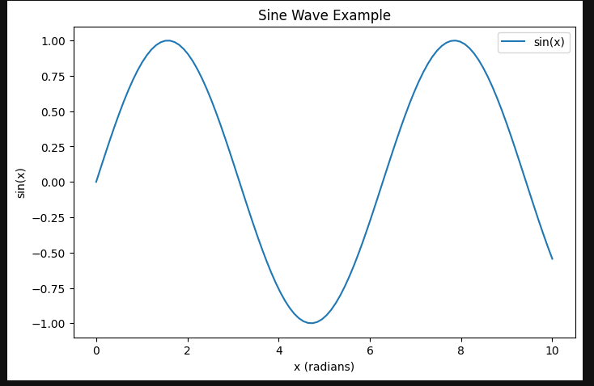
3.2 Common Plot Types
Line Plot
Input Data:
- x (optional): Array/list of x-values. If omitted, indices are used.
- y: Array/list of y-values.
fig, ax = plt.subplots()
x = np.linspace(0, 10, 100)
ax.plot(x, np.sin(x), label='sin(x)', linestyle='--', lw=2, marker='o', markersize=4)
linestyle='--': Dashed line.lw=2: Line thickness.marker='o': Circular markers at data points.markersize=4: Controls marker size.
Other Common Parameters:
- color/c: Line color (e.g.,
'red','#FF5733'). - alpha: Transparency (0–1).
- markeredgecolor: Edge color of markers.
Pro Tip:
Use markers sparingly for cleaner plots with dense data.
Scatter Plot
Input Data:
- x, y: Arrays/lists of coordinates (equal length).
fig, ax = plt.subplots()
x = np.random.randn(100)
y = x + np.random.randn(100) * 0.5
ax.scatter(x, y, c=y, s=50, cmap='viridis', edgecolor='black', alpha=0.8)
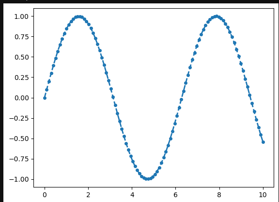
c=y: Color mapped to y values.s=50: Marker size.cmap='viridis': Color palette forc.edgecolor='black': Black marker borders.
Other Common Parameters:
- marker: Symbol (e.g.,
's','^'). - linewidths: Border thickness.
- vmin/vmax: Colormap limits.
Pro Tip:
Use
cwith a continuous variable (e.g., temperature) to encode 3D information.
Bar Chart
Input Data:
- categories: List/array of labels (x-axis).
- values: List/array of bar heights (y-axis).
fig, ax = plt.subplots()
categories = ['A', 'B', 'C', 'D']
values = [15, 20, 12, 25]
ax.bar(categories, values, width=0.6, align='center', hatch='/', edgecolor='black')
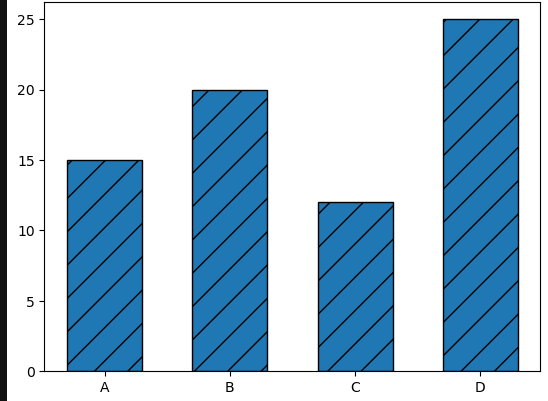
width=0.6: Bar width (default: 0.8).align='center': Centers bars on x-ticks.hatch='/': Diagonal stripes.edgecolor='black': Bar border color.
Other Common Parameters:
-
color: Bar fill color.
-
alpha: Fill transparency.
-
label: For legends.
Pro Tip:
Use
ax.barh()for horizontal bars with long category labels.
Histogram
Input Data:
- Single array/list of values.
fig, ax = plt.subplots()
data = np.random.randn(1000)
ax.hist(data, bins=30, density=True, histtype='stepfilled', color='green', alpha=0.5)
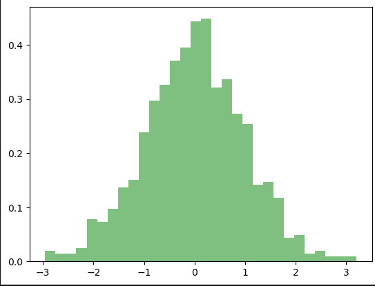
bins=30: Number of bins.density=True: Normalizes to probability density.histtype='stepfilled': Filled outline (vs.'bar').alpha=0.5: Transparency.
Other Common Parameters:
-
cumulative=True: Cumulative distribution.
-
orientation='horizontal': Horizontal bins.
Pro Tip:
Use
density=Trueto compare distributions with different sample sizes.
Box Plot
Input Data:
- List of arrays (one array per box).
fig, ax = plt.subplots()
data = [np.random.normal(0, std, 100) for std in [1, 2, 3]]
ax.boxplot(data, tick_labels=['A', 'B', 'C'], notch=True, patch_artist=True, widths=0.6)
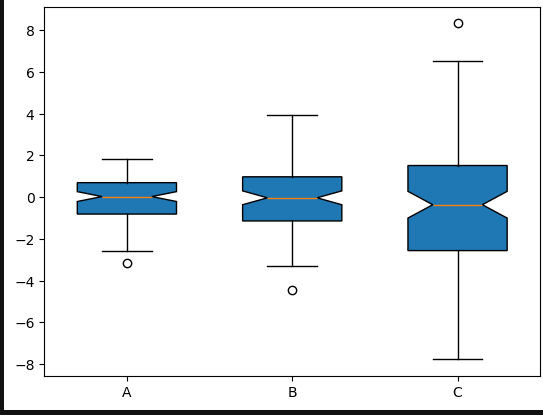
notch=True: Adds 95% confidence interval notches.patch_artist=True: Enables color filling.widths=0.6: Box width.
Other Common Parameters:
- showmeans=True: Displays mean markers.
- meanline=True: Shows mean as a line (requires
showmeans=True). - vert=False: Horizontal boxes.
Pro Tip:
Overlapping notches between boxes suggest statistically similar medians.
Pie Chart
Input Data:
- sizes: List of sizes for each wedge.
- labels: List of labels for the wedges (optional).
fig, ax = plt.subplots()
sizes = [25, 35, 20, 20]
labels = ['A', 'B', 'C', 'D']
ax.pie(sizes, labels=labels, autopct='%1.1f%%', startangle=90, explode=(0, 0.1, 0, 0))
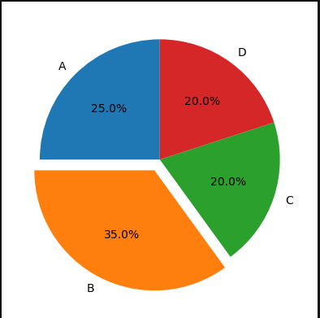
autopct='%1.1f%%': Displays percentages on wedges.startangle=90: Rotates the start of the pie chart.explode=(0, 0.1, 0, 0): "Explodes" (offsets) specific slices.
Other Common Parameters:
- colors: Custom colors for wedges (e.g.,
['red', 'blue', 'green']). - shadow: Adds a shadow behind the chart (
True/False). - labeldistance: Distance of labels from the center.
Pro Tip:
Use
autopctfor quick readability andexplodeto highlight specific slices.
Categorization of plots
| Category | Data Type | Example Plots |
|---|---|---|
| Distributions | Univariate/Bivariate | Histogram, Box Plot, Violin Plot |
| Trends | Time/Ordered | Line Plot, Step Plot |
| Comparisons | Categorical | Bar Chart, Grouped Bar Chart |
| Relationships | Multivariate | Scatter Plot, Hexbin Plot |
| Composition | Proportions | Pie Chart, Stacked Area Plot |
| Geospatial | Spatial/Gridded | Contour Plot, Heatmap |
| 3D | Three-dimensional | 3D Surface Plot, 3D Scatter |
3.3 Customizing Plots
Colors, Line Styles, and Markers
Matplotlib provides universal parameters to control colors, line styles, and markers across all plot types. These can be applied to lines, bars, markers, edges, and fills.
| Parameter | Description |
|---|---|
color / c |
Color of lines, markers, or bars (supports named colors, hex codes, RGB). |
linestyle / ls |
Line style ('-', '--', ':', '-.'). |
linewidth / lw |
Thickness of lines or edges (in points). |
marker |
Marker style for points ('o', 's', '^', '+', 'x', etc.). |
markersize / ms |
Size of markers. |
alpha |
Transparency (0 = transparent, 1 = opaque). |
edgecolor / ec |
Color of edges (bars, markers, histogram bins). |
facecolor / fc |
Fill color (bars, histogram bins). |
Pro Tips
- Use color maps (e.g.,
viridis,plasma) for continuous data in scatter/contour plots.- Combine
linestyleandmarkerin line plots to emphasize data points.- For bar/histogram edges, use
edgecolorandlinewidthfor clarity.
Grids and Annotations
ax.grid(True, linestyle='--', alpha=0.6) # Add grid lines
ax.text(5, 0, 'Zero Crossing', # Add text at (5, 0)
fontsize=10,
color='blue',
ha='center'
)
ax.annotate('Peak', # Add annotation with arrow
xy=(np.pi/2, 1),
xytext=(3, 0.8),
arrowprops=dict(facecolor='black', arrowstyle='->')
)
- grid(): Customize grid visibility and style.
- text()/annotate(): Add labels or explanatory arrows.
Axis Limits and Ticks
ax.set_xlim(0, 10) # Set x-axis range
ax.set_ylim(-1.5, 1.5) # Set y-axis range
ax.set_xticks([0, 5, 10]) # Manually set x-ticks
ax.set_xticklabels(['Start', 'Mid', 'End']) # Label ticks
ax.tick_params(axis='y', direction='inout', length=10) # Tick direction/length
Other Parameters:
ax.set_yscale('log'): Use logarithmic scaling.
Style Sheets
Apply pre-defined themes for quick styling:
plt.style.use('ggplot') # Styles: 'seaborn', 'fivethirtyeight', 'dark_background'
Legend and Titles
ax.legend(loc='upper left', fontsize=8, frameon=False) # Remove legend frame
ax.set_title("Customized Sine Wave", fontsize=14, pad=20) # Title with padding
ax.set_xlabel("Time (s)", fontsize=12, labelpad=10) # Label padding
Pro Tip:
Use
plt.tight_layout()to fix overlapping elements.
3.4 Saving Plots
Save plots to files for reports, papers, or presentations:
fig, ax = plt.subplots(figsize=(8, 5))
ax.plot(x, np.sin(x))
fig.savefig('sine_wave.png',
dpi=300, # Higher resolution for publications
bbox_inches='tight', # Remove whitespace around the plot
transparent=False, # Save with transparent background
format='png' # Options: 'pdf', 'svg', 'jpg', 'eps'
)
- dpi: Dots per inch (default=100). Use 300+ for high-quality images.
- bbox_inches='tight': Automatically trim empty space.
- format: Choose output file type.
Supported Formats:
- Vector formats: PDF, SVG (ideal for editing in Illustrator/Inkscape).
- Raster formats: PNG, JPG (for web/print).
Pro Tip:
Save as PDF/SVG first for scalable edits, then export to PNG as needed.
For more details: these cheatsheets from matplotlib may prove helpful as they contain shortcuts to official documentation
🔹4. Seaborn: Simplifying Statistical Visualization
4.1 Why Seaborn?
Seaborn is a high-level Python library built on Matplotlib that simplifies the creation of statistically meaningful and aesthetically pleasing visualizations. Key advantages include:
- Statistical Focus: Automatically computes aggregations (e.g., means, confidence intervals) for plots like bar charts and box plots.
- Pandas Integration: Works natively with DataFrames, reducing data wrangling.
- Smart Defaults: Built-in themes and color palettes improve readability out-of-the-box.
- Complex Plots Made Easy: Creates advanced plots (violin plots, pair plots, heatmaps) with minimal code.
- Relationship Visualization: Simplifies plotting correlations, distributions, and groupings in multivariate data.
Use Seaborn When:
- You need quick exploratory data analysis (EDA).
- Your data is stored in a Pandas DataFrame.
- You want to visualize distributions, trends, or relationships between variables.
4.2 Basic Syntax
import seaborn as sns
import matplotlib.pyplot as plt
# Load built-in dataset
tips = sns.load_dataset("tips")
# Create a scatter plot
sns.scatterplot(data=tips, x="total_bill", y="tip", hue="time")
plt.show()
data: DataFrame containing the data.x/y: Column names for axes.hue: Adds color encoding based on a categorical column.- Automatic Labels: Uses DataFrame column names as axis labels.
same example but in matplotlib
# Matplotlib equivalent (more verbose)
fig, ax = plt.subplots()
for time in tips["time"].unique():
subset = tips[tips["time"] == time]
ax.scatter(subset["total_bill"], subset["tip"], label=time)
ax.legend(title="Time")
ax.set_xlabel("Total Bill")
ax.set_ylabel("Tip")
plt.show()
in the rest of seaborn section we'll be visualizing with
tipsintegrated datatset so i guess it would be intuitive to learn know more about the data frame
here is theinfo()andhead()
<class 'pandas.core.frame.DataFrame'>
RangeIndex: 244 entries, 0 to 243
Data columns (total 7 columns):
# Column Non-Null Count Dtype
--- ------ -------------- -----
0 total_bill 244 non-null float64
1 tip 244 non-null float64
2 sex 244 non-null category
3 smoker 244 non-null category
4 day 244 non-null category
5 time 244 non-null category
6 size 244 non-null int64
dtypes: category(4), float64(2), int64(1)
memory usage: 7.4 KB
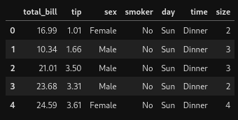
4.3 Working with DataFrames
Tidy Data Format
Seaborn requires data in tidy format:
- Each row = single observation.
- Each column = variable.
as a cheatsheet you may look into Explore the Seaborn Gallery it has code well documented code snippets in one place
Common Plot Types (for quick reference)
1. Categorical Plots
# Box plot grouped by day
sns.boxplot(data=tips, x="day", y="total_bill", hue="sex", palette="pastel")
plt.show()
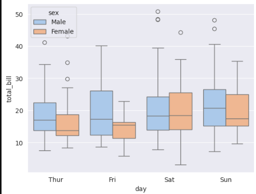
palette: Controls color scheme (e.g.,"viridis","husl").
2. Distribution Plots
# Histogram with kernel density estimate (KDE)
sns.histplot(data=tips, x="total_bill", kde=True, hue="sex", element="step")
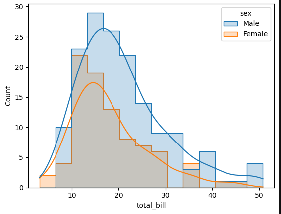
kde=True: Overlays a density curve.element:"step"for cleaner histograms.
to demonstrate akde=Falsewill look like this
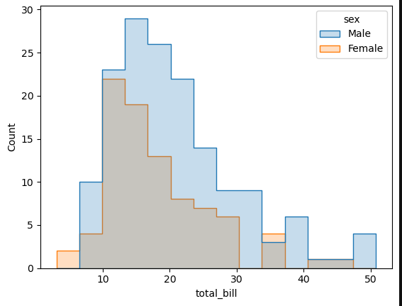
3. Pair Plots (Multivariate Analysis)
# Plot pairwise relationships
sns.pairplot(tips, hue="smoker", corner=True)
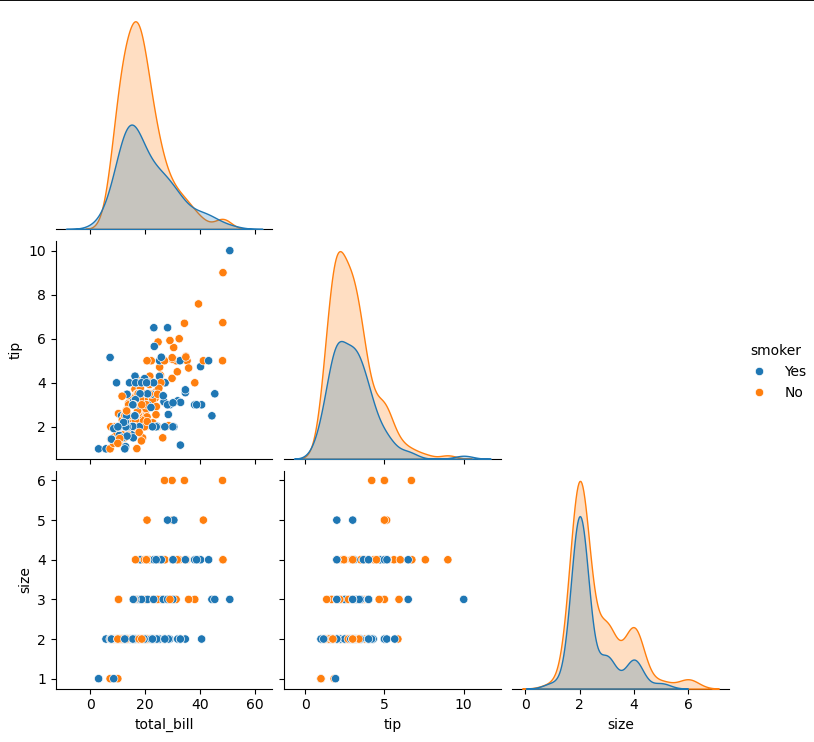
corner=True: Shows only lower triangle of plots.
4. Heatmaps (Correlation Matrix)
# Compute correlations
corr = tips.corr(numeric_only=True)
# Plot heatmap
sns.heatmap(corr, annot=True, cmap="coolwarm", vmin=-1, vmax=1)
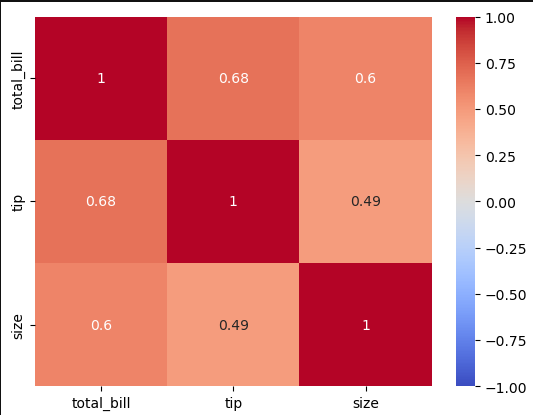
annot=True: Displays values in cells.vmin/vmax: Sets color scale limits.
Advanced: FacetGrids
Split data into subplots based on categories:
g = sns.FacetGrid(tips, col="time", row="smoker", margin_titles=True)
g.map(sns.scatterplot, "total_bill", "tip")
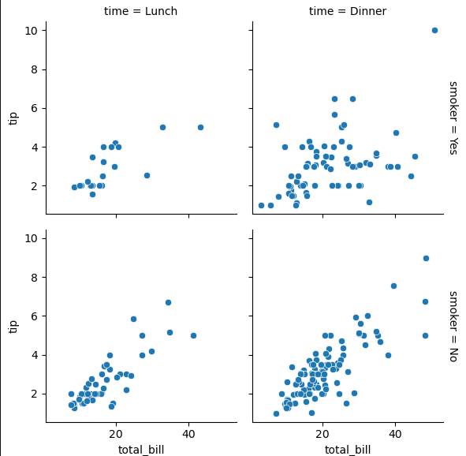
col/row: Columns to split the grid.map(): Applies a plotting function to each subplot.
Customization
Combine Seaborn with Matplotlib for fine-tuning:
sns.set_style("darkgrid") # Themes: white, dark, ticks, whitegrid
sns.set_palette("husl") # Color palettes: deep, muted, pastel, etc.
ax = sns.barplot(data=tips, x="day", y="total_bill", errorbar=None)
ax.set_title("Average Bill by Day", fontsize=14)
ax.set_ylabel("Average Bill ($)")
plt.xticks(rotation=45)
plt.show()
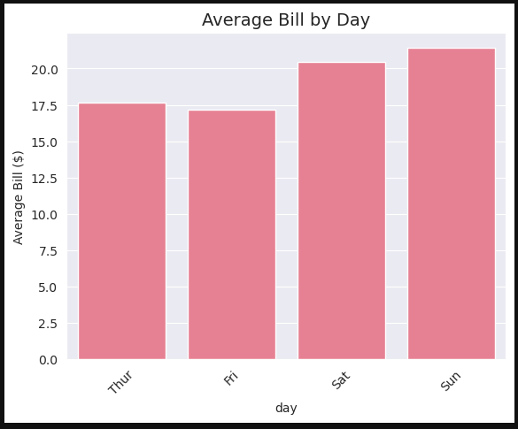
Pro Tips
- "ValueError: Could not interpret input 'x'": Ensure column names match DataFrame exactly.
- Missing Data: Use
dropna()or specifyhue_order/orderfor categorical variables.>- Overplotting: Adjust
alpha(transparency) or switch tosns.kdeplot()for dense data.
🔹 5. Common Plotting Patterns & Recipes
5.1 Handling Large Datasets Efficiently
Large datasets (e.g., millions of data points) can slow down plotting, increase memory usage, or produce cluttered visualizations. Here are strategies to optimize plotting for large datasets:
Strategies for Efficiency
- Downsampling:
- Reduce the number of points plotted by sampling or aggregating data.
- Example: Plot every nth point or use statistical summaries (e.g., mean, median).
- Use Appropriate Plot Types:
- Scatter plots with many points can become unreadable; consider hexbin plots, 2D histograms, or contour plots for density visualization.
- Optimize Rendering:
- Use Matplotlib’s Agg backend for non-interactive plotting to save memory.
- Reduce marker sizes or use line plots instead of scatter for dense data.
- Leverage Vectorized Operations:
- Use NumPy for computations to avoid slow Python loops.
- Seaborn for Aggregated Plots:
- Seaborn’s statistical plots (e.g., boxplot, violinplot) automatically summarize data, reducing the need to plot every point.
import matplotlib.pyplot as plt
import numpy as np
import seaborn as sns
# Generate large dataset (1M points)
np.random.seed(42)
x = np.random.randn(1_000_000)
y = x + np.random.randn(1_000_000) * 0.5
# Downsample: Take every 100th point
sample_idx = np.arange(0, len(x), 100)
x_sample = x[sample_idx]
y_sample = y[sample_idx]
# Create figure with two subplots
fig, (ax1, ax2) = plt.subplots(1, 2, figsize=(12, 5))
# Scatter plot (downsampled)
ax1.scatter(x_sample, y_sample, s=5, alpha=0.5, color='blue')
ax1.set_title("Downsampled Scatter (10K points)")
ax1.set_xlabel("X")
ax1.set_ylabel("Y")
# Hexbin plot (full dataset)
hb = ax2.hexbin(x, y, gridsize=50, cmap='viridis', mincnt=1)
ax2.set_title("Hexbin Plot (1M points)")
ax2.set_xlabel("X")
ax2.set_ylabel("Y")
fig.colorbar(hb, ax=ax2, label='Counts')
plt.tight_layout()
plt.show()
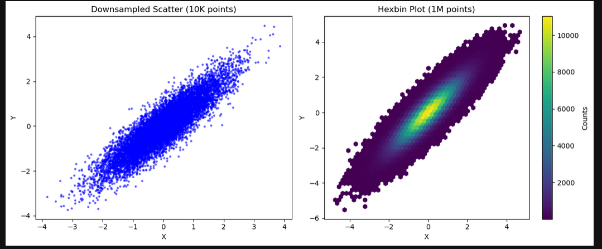
- The right subplot uses a hexbin plot to visualize the full 1M points, with hexagonal bins showing density (darker = more points).
see hexagonal binning
5.2 Multiple Subplots and Layouts
we're going to revisit a bit Figures and Axes: The Plotting Canvas
Subplots allow you to display multiple plots within a single figure, ideal for comparing datasets or visualizing different aspects of the same data. Matplotlib’s plt.subplots() and Seaborn’s FacetGrid are powerful tools for creating subplot layouts.
Key Concepts
- Grid Layouts: Use plt.subplots(nrows, ncols) to create a grid of axes.
- Shared Axes: Share x/y axes to reduce redundancy and align scales.
- Custom Layouts: Use GridSpec for non-uniform subplot arrangements.
- Seaborn FacetGrid: Automatically creates subplots based on categorical variables.
import matplotlib.pyplot as plt
import numpy as np
# Generate sample data
x = np.linspace(0, 10, 100)
y1 = np.sin(x)
y2 = np.cos(x)
y3 = x**2
y4 = np.exp(x/10)
# Create 2x2 subplot grid with shared x-axis
fig, axes = plt.subplots(2, 2, figsize=(10, 8), sharex=True)
# Flatten axes array for easier indexing
axes = axes.flatten()
# Plot different data on each subplot
axes[0].plot(x, y1, 'b-', label='sin(x)')
axes[0].set_title('Sine Wave')
axes[0].legend()
axes[1].plot(x, y2, 'r--', label='cos(x)')
axes[1].set_title('Cosine Wave')
axes[1].legend()
axes[2].plot(x, y3, 'g-', label='x^2')
axes[2].set_title('Quadratic')
axes[2].legend()
axes[3].plot(x, y4, 'm-.', label='exp(x/10)')
axes[3].set_title('Exponential')
axes[3].legend()
# Add common labels
fig.supxlabel('X (radians)')
fig.supylabel('Y')
plt.tight_layout()
plt.show()
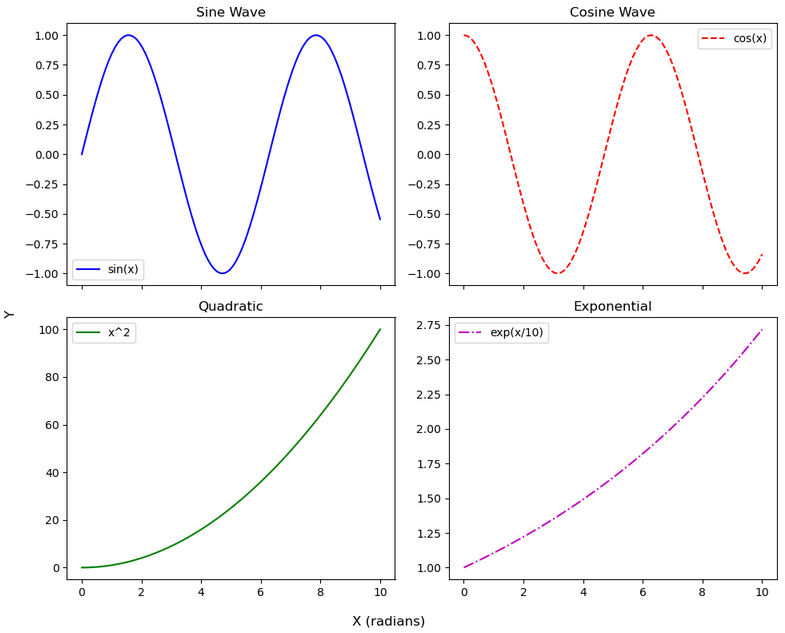
Pro Tips:
- Flattening Axes: Use axes.flatten() for easier iteration over subplots in a grid.
- Custom Layouts: For unequal subplot sizes, use
matplotlib.gridspec.GridSpec.- Seaborn Alternative: For categorical data, use
sns.catplotorsns.FacetGridto automatically generate subplots based on variables.
5.3 Using Functions to Generate Reusable Plots
Creating reusable plotting functions enhances code modularity, reduces duplication, and ensures consistent styling across visualizations. A more complex function can handle multiple plot types, advanced styling, and robust error handling to accommodate various use cases.
Key Principles
- Flexibility: Support multiple plot types (e.g., line, scatter) and customization options (e.g., colors, markers, legends).
- Error Handling: Validate inputs for data compatibility and user errors.
- Return Objects: Return
figandaxfor further customization. - Documentation: Use detailed docstrings to clarify parameters and usage.
5.4 Combining Multiple Plots in One Figure
Combining different plot types (e.g., scatter and line, or histogram and KDE) in a single axes or figure can highlight relationships or comparisons effectively.
Key Techniques
- Multiple Plot Calls: Use multiple ax.plot(), ax.scatter(), etc., on the same axes.
- Twin Axes: Use ax.twinx() or ax.twiny() to plot different scales on the same subplot.
- Legends: Ensure all plot elements are labeled for clarity.
- Seaborn + Matplotlib: Use Seaborn for statistical plots and Matplotlib for additional overlays.
Snippet 1: Multiple Plot Calls (Scatter and Line on Same Axes)
shares the range of x and y axis (value range)
import matplotlib.pyplot as plt
import numpy as np
# Generate sample data
x = np.linspace(0, 10, 100)
y1 = np.sin(x)
y2 = np.cos(x)
# Create figure and axes
fig, ax = plt.subplots(figsize=(8, 5))
# Plot scatter and line
ax.scatter(x[::5], y1[::5], color='blue', label='sin(x)', s=50, alpha=0.6)
ax.plot(x, y2, color='red', linestyle='--', label='cos(x)')
# Customize
ax.set_title('Scatter and Line Overlay')
ax.set_xlabel('X (radians)')
ax.set_ylabel('Y')
ax.legend()
ax.grid(True, linestyle='--', alpha=0.6)
plt.tight_layout()
plt.show()
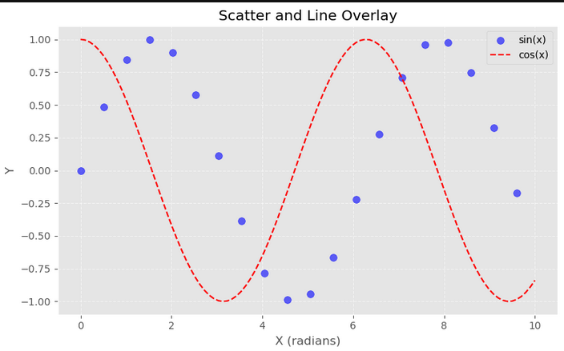
Explanation:
- Overlays a scatter plot of
sin(x)(every 5th point) and a line plot ofcos(x)on the same axes. - Uses distinct colors and a legend to differentiate the plots.
Snippet 2: Twin Axes with twinx() (Secondary Y-Axis)
share the same x axis
import matplotlib.pyplot as plt
import numpy as np
# Generate sample data
x = np.linspace(0, 10, 100)
y1 = np.sin(x)
y2 = x**2
# Create figure and primary axes
fig, ax1 = plt.subplots(figsize=(8, 5))
# Plot on primary y-axis (sin(x))
ax1.plot(x, y1, color='blue', label='sin(x)')
ax1.set_xlabel('X (radians)')
ax1.set_ylabel('sin(x)', color='blue')
ax1.tick_params(axis='y', labelcolor='blue')
# Create secondary y-axis (x^2)
ax2 = ax1.twinx()
ax2.plot(x, y2, color='red', linestyle='--', label='x^2')
ax2.set_ylabel('x^2', color='red')
ax2.tick_params(axis='y', labelcolor='red')
# Combine legends
lines1, labels1 = ax1.get_legend_handles_labels()
lines2, labels2 = ax2.get_legend_handles_labels()
ax1.legend(lines1 + lines2, labels1 + labels2, loc='upper left')
fig.suptitle('Line Plot with Secondary Y-Axis')
plt.tight_layout()
plt.show()
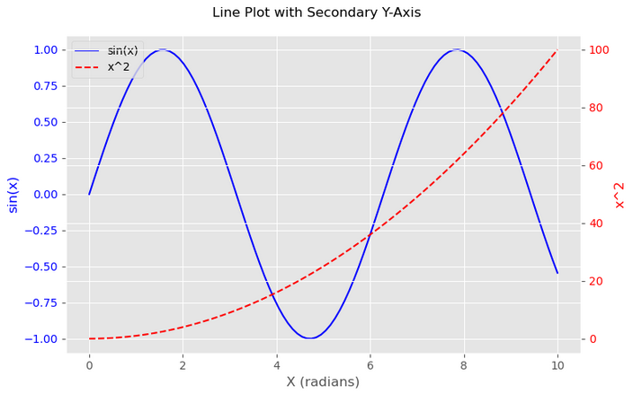
Explanation:
ax1.twinx()creates a secondary y-axis (ax2) sharing the same x-axis.- Plots
sin(x)on the primary y-axis andx^2on the secondary y-axis, which accommodates the different scales (sin(x) ranges -1 to 1, x^2 ranges 0 to 100). - Color-coded labels and ticks improve readability.
Snippet 3: Twin Axes with twiny() (Secondary X-Axis)
share the same y axis
import matplotlib.pyplot as plt
import numpy as np
# Data
x = np.linspace(0, 10, 100)
y = np.sin(x)
# Create the main plot
fig, ax1 = plt.subplots()
ax1.plot(x, y, color='blue')
ax1.set_xlabel('Time (seconds)')
ax1.set_ylabel('Amplitude')
ax1.set_title('twiny() Example - Two X Axes')
# Create a twin x-axis (shares the y-axis)
ax2 = ax1.twiny()
# Set a different scale for the top x-axis (e.g., time in minutes)
ax2.set_xlim(ax1.get_xlim()) # Make sure they align
ax2.set_xticks(np.linspace(0, 10, 6))
ax2.set_xticklabels([f'{t/60:.2f}' for t in np.linspace(0, 10, 6)])
ax2.set_xlabel('Time (minutes)')
plt.show()
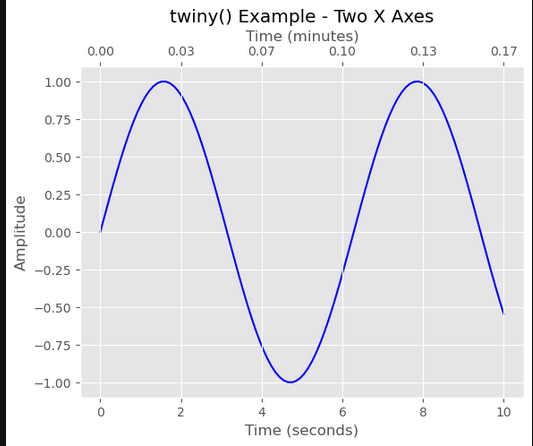
Explanation:
ax1.twiny()creates a secondary x-axis (ax2) sharing the same y-axis.- Plots
sin(x)with x-axis in seconds (primary) and hours (secondary, where minutes= seconds/60). - Demonstrates how
twiny()is used for different x-axis scales (e.g., different units).
Difference Between
twinx()andtwiny():
twinx(): Creates a secondary y-axis with a shared x-axis, ideal for plotting variables with different y-scales (e.g., temperature vs. pressure).twiny(): Creates a secondary x-axis with a shared y-axis, useful for different x-axis units or scales (e.g., time in seconds vs. hours).
Snippet 4: Seaborn + Matplotlib (KDE and Scatter Overlay)
import matplotlib.pyplot as plt
import seaborn as sns
import numpy as np
# Generate sample data
np.random.seed(42)
x = np.random.randn(1000)
y = x + np.random.randn(1000) * 0.5
# Create figure and axes
fig, ax = plt.subplots(figsize=(8, 5))
# Seaborn KDE plot
sns.kdeplot(x=x, y=y, ax=ax, cmap='Blues', fill=True, alpha=0.5)
# Matplotlib scatter overlay
ax.scatter(x[::50], y[::50], color='red', label='Data Points', s=30, alpha=0.7)
# Customize
ax.set_title('KDE and Scatter Overlay')
ax.set_xlabel('X')
ax.set_ylabel('Y')
ax.legend()
ax.grid(True, linestyle='--', alpha=0.6)
plt.tight_layout()
plt.show()
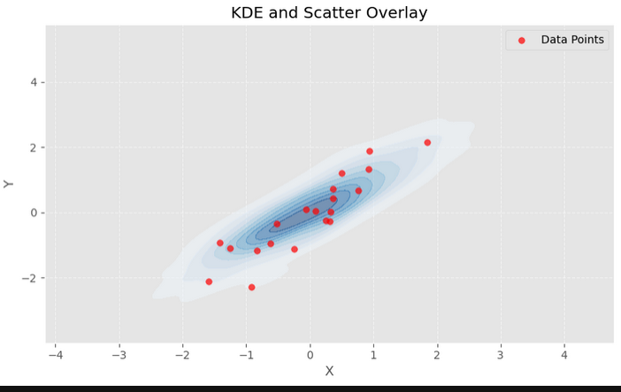
Explanation:
- Uses Seaborn’s
kdeplotto show the density of a bivariate dataset. - Overlays a Matplotlib scatter plot of a subset of points to highlight individual data.
- Combines Seaborn’s statistical visualization with Matplotlib’s flexibility.
Pro Tips:
- Twin Axes Usage: Use
twinx()for different y-axis scales (e.g., different units like amplitude vs. power). Usetwiny()for different x-axis scales (e.g., time in different units). - Legend Management: Combine legends from multiple axes or plots using
get_legend_handles_labels()to avoid clutter. - Seaborn + Matplotlib: Use Seaborn for quick statistical plots and Matplotlib for precise overlays or customizations.
- Readability: Limit combined plots to 2–3 elements to avoid visual overload.
🔹 6. Debugging & Troubleshooting Plots
Debugging plotting issues in Python can be challenging due to the complexities of libraries like Matplotlib and Seaborn. This section addresses common errors, figure size and resolution problems, and techniques for handling overlapping labels, providing practical solutions to ensure your visualizations are robust and professional.
6.1 Common Errors and How to Fix Them
Plotting libraries like Matplotlib and Seaborn can throw errors due to incorrect inputs, library-specific quirks, or environmental issues. Below are common errors, their causes, and solutions.
Error 1: ValueError: "x and y must have same first dimension"
- Cause: The arrays for x and y in a plot have different lengths or shapes, often due to slicing or filtering errors.
- Fix: Ensure x and y have the same length by checking their shapes or lengths. Convert lists to NumPy arrays for consistency and verify data before plotting.
- Pro Tip: Always validate array shapes, especially when working with sliced or dynamically generated data.
Error 2: ValueError: "Could not interpret input 'column_name'" (Seaborn)
- Cause: Seaborn can’t find the specified column in the DataFrame, often due to typos, case sensitivity, or missing data.
- Fix: Verify column names by checking the DataFrame’s columns. Handle missing data by removing rows with null values or specifying valid categorical orders for hue parameters.
- Pro Tip: Inspect DataFrame structure to confirm column names and data types, and preprocess data to remove or impute missing values.
Error 3: AttributeError: "'module' object has no attribute 'plot'"
- Cause: Incorrect import or namespace conflict, such as importing the main Matplotlib module instead of its plotting submodule.
- Fix: Use the correct import for plotting functions to ensure access to plotting methods.
- Pro Tip: Avoid wildcard imports to prevent namespace conflicts and ensure clear access to plotting functions.
Error 4: Plot Not Displaying
- Cause: Missing display command in scripts or incorrect backend settings in environments like Jupyter.
- Fix: Explicitly call the display function in scripts. In Jupyter, configure the appropriate backend for inline or interactive plotting.
- Pro Tip: Check the current backend to diagnose display issues and switch to an interactive backend if needed.
Error 5: TypeError: "unsupported operand type(s) for ..."
- Cause: Non-numeric data (e.g., strings or objects) passed to plotting functions that expect numbers.
- Fix: Convert data to numeric types using appropriate conversion functions before plotting.
- Pro Tip: Always check data types before plotting to ensure compatibility.
General Debugging Tips:
- Check Inputs: Inspect data shapes, types, and content before plotting to catch issues early.
- Update Libraries: Keep Matplotlib and Seaborn updated to avoid bugs in older versions.
- Minimal Example: Reproduce errors with small datasets to isolate the problem quickly.
6.2 Understanding Figure Size and Resolution Issues
Figure size and resolution issues can result in distorted, pixelated, or improperly scaled plots, especially when saving for reports or presentations. This subsection explains how to control figure size, aspect ratio, and resolution effectively.
Key Concepts
- Figure Size: Defined by width and height in inches, set when creating a figure.
- Resolution (DPI): Dots per inch, determining image quality when saving (higher DPI for print, lower for screens).
- Aspect Ratio: The width-to-height ratio, affecting plot proportions.
- Backend Effects: Different rendering backends impact display and performance.
Common Issues and Fixes
- Issue: Plot Too Small or Large
- Cause: Default figure size may not suit the display or output medium.
- Fix: Specify a custom figure size when creating the plot or set a global default size.
- Pro Tip: Choose figure sizes proportional to the output medium, such as larger for slides or smaller for papers.
- Issue: Pixelated or Low-Quality Saved Plots
- Cause: Low DPI setting when saving, resulting in blurry images.
- Fix: Increase DPI to 300 or higher for high-quality outputs, especially for print or publication.
- Pro Tip: Trim excess whitespace when saving to ensure clean outputs.
- Issue: Incorrect Aspect Ratio
- Cause: Default aspect ratio may distort shapes, such as making circles appear as ovals in scatter plots.
- Fix: Set equal scaling for x and y axes or adjust figure size to match data proportions.
- Pro Tip: Always use equal aspect ratios for geometric or spatial data to preserve shapes.
- Issue: Backend-Related Display Issues
- Cause: Using a non-interactive backend that doesn’t support display.
- Fix: Switch to an interactive backend or configure the environment for inline plotting.
- Pro Tip: Verify the current backend to diagnose rendering issues.
Pro Tips:
- Screen vs. Print: Use lower DPI (e.g., 100) for screen displays and higher DPI (e.g., 300) for print or publication.
- Vector Formats: Save plots as PDF or SVG for scalable, high-quality graphics editable in tools like Illustrator.
- Preview Size: Test figure size on-screen before saving to ensure it fits the intended output.
6.3 Adjusting Overlapping Labels
Overlapping labels, such as tick labels, axis labels, or annotations, can make plots unreadable, particularly with dense data or long text. This subsection provides techniques to prevent or fix overlap.
Common Issues and Fixes
- Issue: Overlapping Tick Labels
- Cause: Too many ticks or long labels on axes, common with categorical data or dense numerical scales.
- Fix: Reduce the number of ticks, rotate labels to an angle (e.g., 45 degrees), or use automatic layout adjustments.
- Pro Tip: Align rotated labels to the right for better readability with angled text.
- Issue: Overlapping Axis Labels or Title
- Cause: Axis labels or titles positioned too close to ticks or other plot elements.
- Fix: Increase padding between labels and plot elements using specific parameters.
- Pro Tip: Use padding values of 10–20 for titles and 5–15 for axis labels to create clear separation.
- Issue: Overlapping Annotations or Text
- Cause: Annotations placed too closely in dense plots, such as scatter plots with many labels.
- Fix: Adjust annotation positions manually, expand the plot area, or use automated label placement tools like adjustText.
- Pro Tip: Install and use adjustText for complex scatter plots to automatically optimize label placement.
- Issue: Overlapping Subplot Elements
- Cause: Subplots positioned too closely, causing titles, ticks, or labels to overlap.
- Fix: Adjust subplot spacing using automatic layout tools or manual spacing parameters.
- Pro Tip: Use spacing values between 0.2–0.5 for balanced subplot layouts.
Pro Tips:
- Automatic Fixes: Apply automatic layout adjustments as a first step to resolve most overlap issues.
- Font Size: Reduce tick label font size for crowded axes to improve clarity.
- Custom Ticks: Use dynamic tick locators to reduce tick density automatically.
- Preview: Check label placement in a small figure before saving to high-resolution formats.